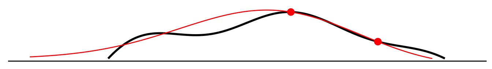
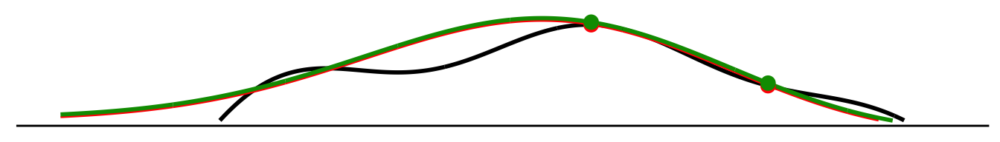
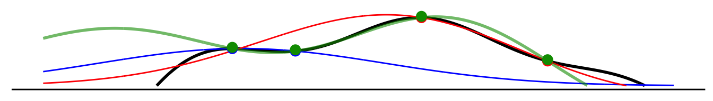
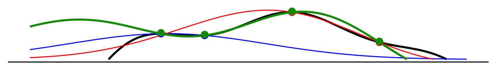
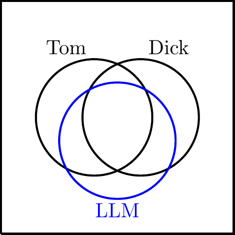
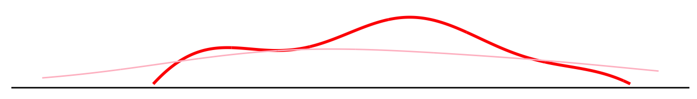
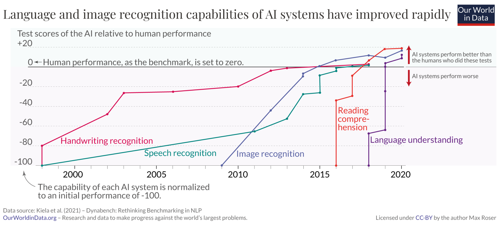

Thanks to comments from many, especially Giorgio Martini, Grady Ward, Rob Donnelly, Inés Moreno de Barreda, and Colin Fraser.
Thanks to comments from many, especially Giorgio Martini, Grady Ward, Rob Donnelly, Inés Moreno de Barreda, and Colin Fraser.
If we train AIs to imitate humans, will they ever beat humans? AI has caught up to human performance on many benchmarks, largely by learning to predict what humans would do. It seems important to know whether this is a ceiling or we should expect them to shoot out ahead of us. Will LLMs be able to write superhumanly-persuasive prose? Will image models be able to see things in photos that we cannot? There is a lot of technical literature on imitation learning in AI but I haven’t found much discussion of this point (Bowman (2023) is a notable exception).
In a formal model I derive five mechanisms by which imitative AI can beat humans.
- Noise. Different humans give different answers to a question, and so if an LLM can consistently give the average answer it will do better than the average human (the error of the average being always smaller than the average of the error).
- Specialization. People tend to write about what they know, and so an LLM which learns to predict the typical answer to a given question will sound like a specialist in all areas: it will answer questions about water like a hydrologist and questions about bugs like an entomologist (although it will also answer questions about astrology like an astrologist).
- Interpolation. An LLM will interpolate responses from different humans, and this interpolation can be functionally equivalent to inference, meaning an LLM will sometimes be able to reliably answer questions that no human can answer.
- Priors. If an LLM has different priors than a human then they could uncover hidden structure that humans do not, e.g. an LLM trained on human observations of astronomical events could conceivably recover cycles in those events, and so give superior predictions to the human.
- Tacit knowledge. The majority of human knowledge is tacit, meaning it is used in forming judgments but we do not have conscious access to that knowledge. If AI models can accurately predict human judgments then the weights in those models effectively contain that tacit knowledge, and so the model can be re-engineered to use that knowledge in ways that humans cannot.
The evidence is unclear. There are many reasons why this could theoretically occur but I couldn’t find much evidence for superhuman performance: many benchmarks which we use to evaluate ML models have human labels as the ground truth, meaning we wouldn’t know when computers do pass us by.
This blog post contains:
- A graphical argument illustrating the five mechanisms.
- A deeper discussion of each of the five mechanisms.
- A brief overview of the AI-human gap in various tasks.
- Discussion of applications, related literature, and complications.
- A simple formal model with a derivation of each of the five mechanisms.
Setup: Modelling Questions and Answers
For concreteness I will describe humans and computers answering questions about the world. However I think the basic framework applies generally to performing tasks or following instructions. Some examples of questions and answers:
| question | answer |
|---|---|
| What’s the capital of Switzerland? | Bern |
| What’s the best response if white plays c4? | Nf6 |
| Does this picture (🐄) depict a cow? | Yes |
| How much more likely is someone to buy a Coke after hearing the slogan “Coke refreshes”? | 0.1% |
Graphical Argument
Here I illustrate all the core points in a graphical framework. For simplicity I am representing a set of questions and answers which can be represented by a pair of numbers, e.g. asking what is elevation of a point along a given line of latitude? I treat the human and the computer as having smooth priors about the world which determines how they interpolate and extrapolate from their observations.
(1) Let the curve above represent the truth about the world. Each question about the world is a point on the x-axis, and the answer to each question is represented by the curve.

(2) A human forms beliefs about the world (red curve). The human asks two questions and gets two answers (red dots) and from these they form estimates of the answer to every other question (red line).

(3) A computer learns to predict the human’s answers (green curve). The human records some questions and their answers (green dots), and the computer learns to predict the human’s answers (green curve). Here I have illustrated a very favorable case, where the human has shared all her observations with the computer, and both the human and computer have the same priors. If the human gives inconsistent answers (imagine a thickening of the green line) then the computer will do better than the human by having less noise (the error of the average always being smaller than the average error).

(4) Add another human (blue curve). Suppose we have an additional human who asks some different questions (blue dots) and so forms different beliefs (blue line). Both humans’ beliefs are are accurate in the neighborhood of their own experience.

(5) Let the computer predict answers from both humans (green curve). Now both humans record their experiences and the computer tries to predict human answers (green curve). Here we can see:
- Specialization. The computer’s predictions can match the humans’ responses in each of their domains of expertise
- Interpolation. The computer is better than both humans in the intermediate region, i.e. the computer effectively combines information from both humans.

(6) Let the computer have superior priors. If the computer and human have different priors then they will make different extrapolations from the same dataset. Suppose the world has a strong cyclical structure, as shown in the black oscillating line. The human does not appreciate the regularity and fits their datapoints with a simple nearest-neighbor algorithm, but the computer, with different priors, could get a superior fit to the true model. A simple hypothetical: suppose we trained a language model to predict records of astronomical observations, it could conceivably discover cycles in these observations even if no human was aware of those cycles, such that computer predictions of out-of-sample human observations of the world would constitute super-human predictions about the world.

(7) Let the human have tacit knowledge. Finally, suppose the human always knows correct the answer when they see the question (red), but their conscious understanding of the relationship (pink) is imperfect. When asked abstract questions about the world they cannot use their tacit knowledge, e.g. if asked what is the maximum of this function they would choose the maximum of the pink curve (conscious beliefs), not the red curve (tacit beliefs). However the computer could learn the tacit knowledge from observing sufficiently many answers, and then algorithmically find the maximum of this curve, substantially outperforming the human at these abstract questions.
Five Reasons for Superhuman Performance
(1) Noise. For many tasks there is very high within-human and between-human variation, so any model which is deterministic will have a substantial advantage. Thus averaging multiple answers tends to do much better (the “wisdom of crowds”, and the “crowd within”). A computer with a deterministic outcome will thus have a substantial advantage. Zhang et al. (2024) shows that an LLM which is trained to predict chess moves of a group of players can outperform any of the players in that group - notably the effect is stronger when the model is trained on non-expert chess players, where the errors might be expected to be uncorrelated.
(2) Specialization. We can see clear evidence of specialization in LLMs: they will answer questions about fish like an icthyologist, and questions about Ukraine like a Ukrainian. There is a nice discussion of this with many examples by ryxcommar:
“When you ask ChatGPT a more intelligent question, you get a more intelligent answer. Just like how you ask ChatGPT a more Spanish question, you get a more Spanish answer.
This works very well as long as the people who talk most about a topic tend to be the people who are most knowledgeable about that topic. If the reverse was true then AI would perform worse than the average person. In some cases it does seem to be true that the people who are most talkative are the least accurate, e.g. for conspiracy theories, politically partisan issues, or pseudosciences.1 Thus we can predict that asking an LLM about these issues will tend to give low-quality answers, and indeed if you ask GPT-4 “what are some characteristics of Virgoes?” it will give a quite factual answer listing the traits of Virgoes.2
1 Analogically, in music or visual art, there might be some genres where the people who create artworks are uniquely bad at it, and so in these genres imitative AI would learn to make artworks worse than the average human would make.
2 As of Oct 2023.
The same point applies for general supervised learning: suppose we train an image model to recognize tumors, and the training set includes examples from different radiologists, each who is an expert in their area (e.g. a pediatric radiologist labels the scans from children, a vetenarian radiologist labels the scans from animals), then the trained model could outperform any single radiologist.
(3) Interpolation. I have not yet come up with a crisp question which an LLM can accurately answer but no human can, however there are tasks which LLMs can perform which it likely no human can perform without help:
Recent LLMs (e.g. GPT, Bard) can transpose styles very easily, e.g. writing a Shakespearean sonnet about a particular episode of a particular television show, which arguably cannot be done by any human being.3
Armengol-Estapé, Gibert Bonet, and Melero (2021) show that GPT-3 does fairly well at answering questions and producing text in Catalan, despite Catalan constituting only 35M words in the training set (0.02% of the total), implying that it can answer questions for which the answer is known by no Catalan speaker. In principle language models could translate between a pair of languages for which there exists no common speaker but I do not know of any explicit confirmation of this.
3 Thanks to Giorgio Martini for this point.
4 thanks to Rob Donnelly for first suggesting this point to me.
(4) Priors. When making extrapolation from the same set of data humans and computers will given different answers because they have different priors, and in some cases computer priors might give a better fit.4
In fact there is a literature from the 1950s showing that computers with linear regression models do better than humans in learning to predict from novel datasets, and indeed better than experts in making clinical judgments using a small number of cues (Camerer and Johnson (1991)). This is surprising because it took an additional 70 years for computers to catch up with human ability in making many other judgments. I think the key difference is that the 1950s results apply to low-dimensional cases (\(p<n\)), while only recently have we taught computers to deal with high-dimensional data (\(p\gg n\)).
Unfortunately I don’t know of any clear-cut examples which show an LLM outperforming a human because of superior priors. Here is a hypothetical: suppose the training data of an LLM included a large set of scientific observations, and those observations contain some underlying pattern which was not recognized by any contemporary scientist. If you ask the LLM about the existence of patterns then it should answer like a scientist and say there is no known pattern. However if you ask the LLM to predict new observations then those predictions may obey the pattern, as a consequence the LLM could be used to systematically map out prediction, which may make it easier to identify the pattern. Thus you could imagine an LLM would correctly predict the position of the stars.
There is an interesting sublety in how the AI ought to be prompted to elicit superhuman knowledge. Consider these two prompts:
- “Q: where will Venus be on June the 16th? ___”
- “On June the 16th Venus was observed to be ___”
If the AI learned superior priors to the human then we should expect it to answer these prompts differently: it would answer prompt #1 using the human model, and answer prompt #2 using the true model.
(5) Tacit Knowledge.
The relative success of machine learning over symbolic AI has often been connected to the importance of tacit human knowledge. I have written a lot about the importance of tacit knowledge in human decision-making, especially Cunningham (2015) and this post, see also Cunningham and De Quidt (2022). In memory a related phenomenon is the “recognition recall” gap: people are significantly better at recognizing whether they saw a word before than in recalling that word (MacDougall (1904)).
Stiennon et al. (2022) train models to summarize text, based not on human summaries but on human evaluations of summaries. The model produces summaries that are preferred to human-produced summaries 70% of the time, i.e. superhuman production by training on human feedback. However this isn’t quite an apples-to-apples comparison because it’s unclear what the goals were of the humans who produced the baseline summaries: the human raters had explicit rubrics, but the human summarizers weren’t explicitly incentivized on those rubrics (as far as I can tell).
In addition I think that “inversion of tacit knowledge” is a reasonable description of image synthesis by neural nets: models are first trained to recognize images given captions, and then a new image can be synthesized to match a given caption, e.g. through a diffusion algorithm. Here there’s a striking asymmetry: algorithms can approximately match average human performance in recognition, but they far outperform human performance in construction of new artefacts.
Evidence on Superhuman Performance
Timeline

The following table shows the year in which a computer (or mechanical device) could match performance with the best human:
| arithmetic | 1642 |
| chess | 1997 |
| Jeopardy | 2005 |
| image recognition (ImageNet) | 2015 |
| handwriting recognition (MNIST) | 2015 |
| question answering (SQuAD1.1) | 2019 |
| difficult math questions (MATH) | 2023 |
| coding problems (MBPP) | (not yet) |
5 Kiela et al. (2021) also say that “models that achieve super-human performance on benchmark tasks (according to the narrow criteria used to define human performance) nonetheless fail on simple challenge examples and falter in real-world scenarios.”
Computers have hit the ceiling on most benchmarks. Kiela et al. (2023) documents that most computer benchmarks have become “saturated,” i.e. computers get close-to-perfect performance, and that recently the speed of saturation has become quicker (see graph on right). They say identify only a single benchmark where performance is not close to the human baseline, and most of the models they discuss are imitation learning. As a consequence some work has moved to evaluating models against “adversarial” benchmarks where the problems are chosen specifically to fool computers (e.g. Dynabench, Kiela et al. (2021)).5
On some tasks human performance defines success. On some tasks human performance effectively is the ground truth, and so by definition computers could never beat humans. This is roughly true for text comprehension: a sentence has a given meaning if and only if the average person believes it has that meaning. When we observe computer outperformance on this type of benchmark it is because either (1) there is human variation and the computer output is more consistent; or (2) computers outperform amateur humans but the ground truth is expert humans.
Performance by Task
Arithmetic: computers passed humans 300 years ago. Machines have been used to do calculations since the 17th century, e.g. Pascal’s calculator from 1642.
| Backgammon | 1979 |
| Chess | 1997 |
| Jeopardy | 2005 |
| Atari games | 2013 |
| Go | 2016 |
| Starcraft | 2019 |
(source)
Playing games: computers passed humans over the last 45 years. See the table in the margin for games. I am not aware of any well-known games in which computers cannot reliably beat the best humans.
 (source)
Image recognition: computers surpassed humans in the 2010s. With the qualifications above about the limitations of benchmark tasks.
Question answering: computers surpassed humans in the 2010s. With the qualifications above about the limitations of benchmark tasks.
Facial recognition: computers seem to be equivalent to experts. Towler et al. (2023) say “naturally skilled super-recognizers, trained forensic examiners and deep neural networks, … achiev[e] equivalent accuracy.”
Coding: computers still below expert. See the benchmarks on PapersWithCode, also a graph on OurWorldInData, specifically APPS and MBPP. The best-performing computers are still imperfect at solving these coding challengers (which presumably can be solved by an expert programmer), but progress is rapid.
Writing persuasive text: computer comparable to average human. A number of recent papers compare the persuasive power of LLM-generated text to human-generated text (Bai et al. (2023), Goldstein et al. (2023), Hackenburg and Margetts (2023), Matz et al. (2023), Palmer and Spirling (2023), Qin et al. (2023)). They all find that LLMs do relatively well, but none show clear signs of computer superiority.
Writing creative blurbs: computer comparable to average human. Koivisto and Grassini (2023) compared GPT4 to online recruited humans (£2 for a 13 minute task) in giving “creative” uses for everyday items. The prompt was to “come up with original and creative uses for an object”, objects were “rope”, “box”, “pencil” and “candle.” The responses were rated by humans for their “creativity” or “originality.” GPT-4 responses were perhaps 1SD above the average human score, but the difference was smaller when choosing just the best response for each user.
Summarizing text: computer beats average human. Two recent papers found that LLM-generated summaries, trained with feedback, were preferred by humans to human-generated summaries (Stiennon et al. (2022) using RLHF and Lee et al. (2023) using RLHF). However in both cases it wasn’t clear to me exactly how the human summarizers were incentivized, and whether they were trying to perform the same task as the LLMs.6
6 Lee et al. (2023) say “RLAIF summaries are preferred over the reference [human-written] summaries 79% of the time, and RLHF are preferred over the reference summaries 80% of the time.”
7 Hendrycks et al. (2021) says “We found that a computer science PhD student who does not especially like mathematics attained approximately 40% on MATH, while a three-time IMO gold medalist attained 90%”
Doing math problems: computer comparable to expert. The latest score on the MATH benchmark is 84%, compared to 90% by a three-time IMO gold medalist. The scores have been rising very rapidly so it seems likely that computers will soon surpass humans.7
Discussion
I will use “superhuman” to mean the AI can answer some question better than any human can. We can formalize “superhuman” ability in a variety of ways. The notation is introduced more fully below, but briefly \(\bm{q}\) represents a question, \(a(\bm{q})\) represents the correct answer, \(\bar{a}(\bm{q})\) represents the computer’s answer, and \(\hat{a}_i(\bm{q})\) represents the answer of human \(i\). We assume squared error loss, and the expected error can be interpreted as either over the universe of all questions, or some subset of questions: \[\begin{aligned} \text{weak:}&& \ut{E[(a(q)-\bar{a}(q))^2]}{error of computer} &\leq \ut{\frac{1}{m}\sum_{i=1}^mE[(a(q)-\hat{a}_i(q))^2]}{avg error of human}\\ \text{medium:}&& \ut{E[(a(q)-\bar{a}(q))^2]}{error of computer} &\leq \ut{E\left[(a(q)-\frac{1}{m}\sum_{i=1}^m\hat{a}_i(q))^2\right]}{error of avg human}\\ \text{strong:}&& \ut{E[(a(q)-\bar{a}(q))^2]}{error of computer} &\leq \ut{\min_{i=1,\ldots,m}E[(a(q)-\hat{a}_i(q))^2]}{error of best human}\\ \text{super-strong:}&& \ut{E[(a(q)-\bar{a}(q))^2]}{error of computer} &\leq \ut{E[\min_{i=1,\ldots,m}\{(a(q)-\hat{a}_i(q))^2\}]}{error of best human by question}\\ \end{aligned} \]
Note that we cannot rank benchmark #2 and #3: the error of the best human could be either higher or lower than the error of the average human. The most interesting question is whether AI can exhibit “super strong” superhuman performance. It seems clear that imitative learning can easily lead to superhuman performance by all the other 3 definitions through (1) reducing noise, and (2) combining expertise. However super-strong superhuman performance would require either (1) interpolation, (2) superior priors, or (3) using tacit human knowledge.
Training models with custom-written answers is still imitative learning. Recent LLMs don’t train just on predicting existing text (books, internet, twitter) they also use datasets of instructions and responses generated by paid raters (Ouyang et al. (2022)). We can still call this imitation but it’s putting relatively more weight on imitating the responses of specific set of people, the paid raters. This fine-tuning significantly improves performance on most benchmarks but I think it also has costs: the model is now predicting output of a specific set of people (i.e. non-expert paid raters), and so conceivably will do less well at incorporating niche information available to an expert.
Training on human evaluations is using human tacit knowledge. Recent LLMs are not purely imitative, e.g. OpenAI’s GPT models are trained with human evaluation of their responses (called reinforcement learning with human feedback (RLHF)), and they find that it dramatically increases performance on instruction-following benchmarks.8 The key difference is that the goal now reflects how humans rate responses rather than how humans generate responses. In some domains the two functions might be identical but in others there’s a clear difference, I would argue that tacit knowledge is the core difference.
Bowman (2023) on super-human performance by LLMs. I have found surprisingly little online or academic discussion about whether LLMs will hit a ceiling defined by human performance. A good paper by Bowman (2023) has a section titled “human performance on a task isn’t an upper bound on LLM performance.” He says LLMs can outperform humans for two reasons: (1) “they are trained on far more data than any human sees,” and (2) “they are often given additional training using reinforcement learning … which trains them to produce responses that humans find helpful without requiring humans to demonstrate such helpful behavior.” I think these correspond to two of the five reasons I identified (specialization and tacit knowledge).
For some tasks human-level performance is the ceiling by definition. The ground truth about language interpretation is humans interpretation, and so it is hard to see how a computer could exhibit superhuman performance (in the super-strong sense).9 In benchmarks for natural language understanding the labels are typically written by the human authors of the benchmark, so it would be impossible to observe superhuman performance (Tedeschi et al. (2023)). A similar point applies to content moderation the definition of ground truth is typically either majority-vote among paid human raters, or the reflective judgment of a senior human employee, thus a computer could only outperform in the weak senses above.10
9 There are exceptions but I don’t think they are quantitatively important. Consider the a sentence like “Buffalo buffalo Buffalo buffalo buffalo buffalo Buffalo buffalo.” This sentence has at least one well-defined meaning according to the typical rules of English but arguably no human would correctly identify that meaning unless specifically prompted. A computer trained only on human comprehension, i.e. data which did not contain such outlier sentences, could plausibly identify its meaning.
10 Many recent language models do outperform the average human baseline on language understanding tasks, but Tedeschi et al. (2023) argue that for a variety of reasons the strength of these results is significantly exaggerated.
Computers could outperform humans on recognition tasks, but we haven’t tested them yet. Most benchmarks for media recognition, e.g. testing for object detection in photos or speech recognition in audio, use human labels as the ground truth. However humans can be mistaken: they might think a photo has a dog in it when it does not or vice versa. Thus human judgment is not the ground truth. We could create a test set to measure superhuman performance either by (1) creating new media (e.g. taking new photos of dogs instead of using existing photos which humans identify as having a dog); (2) obfuscating existing media (e.g. blurring existing photos of dogs). By the argument in this note a classifiers trained only on human-provided labels could exhibit superhuman performance in such a test set, most plausibly through better priors: learning characteristic signs of dogs that humans do not.11
11 Defining the ground truth in a recognition task is somewhat complicated because a given arrangement of pixels is consistent with an infinite variety of objects having caused that arrangement. We talk about an image representing an object in the world only because we have strong priors about the world which allow us to make that inference. So the ground truth in a recognition task must be something like “in ordinary circumstances, what is the probability that these pixels would be caused by a scene with a dog in them.”
Self-play has helped performance in playing games. A common trick to teach computers to play games well is to have them play themselves (self-play), this has been used to get superhuman performance in Backgammon, Chess, Go, & Minecraft. However this is not imitation learning: here the computer is trained against a non-human ground truth, the computer directly observes whether they have won the game. However there are analogues of self-play in imitative models: (1) training models to generate images, and to discriminate between computer-generated and real images (generative adversarial nets, GAN); (2) training an LLM to produce text based on LLM-generated feedback (RLAIF).
The graphical model underplays the importance of model architecture. The graphical model shown above represents both questions and answers as unidimensional, and it makes it seem that a small sample is sufficient to get a reasonably good approximation of the true function. In reality the questions of interest are very high dimensional and most model architectures fail to generalize well at all. Neural nets, especially those with a transformer structure, have had remarkable success in fitting the data, leading to leaps in performance.

Venn diagram representation. This diagram shows an alternative way of representing some of the core claims: in general the questions answerable by an LLM will not be a subset of the questions answered in the training set, or even those answerable by the people who contributed to the training set. The Venn diagram’s disadvantage, relative to the visualizations above, is that it does not represent the mechanics of why the LLM can outperform humans, while the diagram above can be use to separately show five distinct reasons (averaging error, specialization, interpolation, different priors, and using tacit knowledge).
Imitation learning has problems in dynamic situations. The discussion in this note has been about a purely static problem of supplying answers to questions, but text generation can also be considered as a dynamic problem of sequentially generating tokens. A common observation regarding dynamic imitation learning is that pure prediction of expert behaviour (“behavioural cloning”) is not very robust, because the algorithm does not know what to do in situations not observed before (out of distribution), and this has been used to explain weaknesses in the behaviour of autoregressive generative text models.12
12 Cundy and Ermon (2023) say “[the] simple behaviour cloning approach results in a compounding error problem, where the further the trained model gets from the typical expert states, the worse the model performs, incurring increasing error.” I also found these notes from Stanford’s CS273B useful.
Linear Model
Here I give a more formal model and derive some results. I wrote this model before coming up with the graphical argument above. There is a substantial overlap in implications, but I think there is some value in this linear model in the precision with which we define each quantity. The model has three steps:
\[\xymatrix@C=.5cm@R=0cm{ \text{world} && \text{human} && \text{LLM}\\ *+[F:<5pt>]{\bm{w}} \ar[rr]^{\bm{a}=Q\bm{w}} && *+[F:<5pt>]{\hat{\bm{w}}} \ar[rr]^{\hat{\bm{a}}=\hat{Q}\hat{\bm{w}}} && *+[F:<5pt>]{\bar{\bm{w}}} \ar[rr]^{\tilde{a}=\tilde{q}'\bar{\bm{w}}} && \ \\ \txt{unobserved\\truth\\about\\the\\world} & \txt{answers\\to\\human\\questions} & \txt{beliefs\\formed\\by\\human} & \txt{text\\written\\by\\human} & \txt{LLM\\model\\of\\human\\text} & \txt{LLM's\\answers\\to\\new\\questions} } \]
Questions and answers. A question is defined by a set of binary attributes (\(q_1,\ldots,q_p\in\{-1,1\}\)), and the answer is a linear function of those attributes given some unobserved weights \(w_1,\ldots,w_p\):
\[\begin{aligned} \ut{\bmatrix{a^1 \\ \vdots \\ a^n}}{answers} = \ut{\bmatrix{q_1^1 w_1 + \ldots q_p^1w_p \\ \vdots \\ q_1^n w_1 + \ldots q_p^nw_p}}{questions} \end{aligned} \]
Human beliefs. After observing a set of question and their real-world answers the human will form beliefs about the weights \(w_1,\ldots,w_p\). We can explicitly write the human posteriors if we assume their priors are Gaussian and i.i.d. (\(\bm{w}\sim N(0,\sigma^2I)\)):13
13 I am assuming \(\bm{w}\) has zero-mean and is i.i.d. just to cut down on notation, the results all hold for the more general multivariate Normal case.
I give a derivation of the human posteriors below.
I will assume that the number of unobserved weights is large relative to the human’s experience (\(p\gg n\)), so the human will gradually learn more about reality as she observes the answer to more questions. She will be able to perfectly answer any question she’s seen before, but will never learn the full set of weights.
Computer beliefs. Suppose that humans write down some set of questions, \(\hat{Q}\), and then record their best guesses at the answers. These could be questions that the humans already know the answer to (\(\hat{Q}\subseteq Q\)), or they could be new questions that they are guessing the answer to. We then use those questions and answers to train a computer, and the computer likewise assumes a linear model with i.i.d. Gaussian weights. Note that the computer is being trained to predict human responses, not to predict properties of the world. We can write the computer-estimated weights as follows:
\[\begin{aligned} \hat{\bm{a}} &= \hat{Q}\hat{\bm{w}} && \text{(human-generated questions \& answers)}\\ \bar{\bm{w}} &= \hat{Q}'(\hat{Q}\hat{Q}')^{-1}\hat{\bm{a}} && \text{(computer estimate of human weights $\hat{\bm{w}}$)} \end{aligned}\]Computer answers. Finally we can ask the computer a new question, \(\tilde{q}\), and observe its answer:
\[\begin{aligned} \tilde{a} &= \tilde{\bm{q}}'\bar{\bm{w}} && \text{(computer answer to a novel question $\tilde{\bm{q}}$)}\\ \end{aligned}\]Model Implications
- If one human records all their observations then the computer will perfectly imitate them.
- Suppose that there is one human and they write down all of their observations, \(\hat{Q}=Q\). Because the computer and human have the same priors, and observe the same data, then they will therefore end up with the same estimated weights (\(\hat{\bm{w}}=\bar{\bm{w}}\)), and so the computer will answer every question exactly as the human does, though neither knows the truth (\(\bar{\bm{w}}\neq\bm{w}\)).
If humans are noisy then the computer will outperform them. Suppose humans report their answers with some i.i.d. noise \(\epsilon\). If the computer observes sufficiently many answers for each question then the noise will be washed out and they will outperform.
- If humans record a subset of their observation then the computer will perform worse.
- Suppose humans only write down some of their observations, i.e. \(\hat{Q}\) is a row-wise subset of \(Q\). Then computers and humans will give the same answers for any question in the training set, but outside of that set computers will generally do worse than humans. And so for any question \(\bm{q}\not\in\hat{Q}\) the computer will do worse in expectation: \[E[\ut{(\bm{q}(\bm{w}-\bar{\bm{w}}))^2}{computer error}]\geq E[\ut{(\bm{q}(\bm{w}-\hat{\bm{w}}))^2}{human error}].\] Note that we are fixing the question \(\bm{q}\) and taking the expectation over all possible worlds, \(\bm{w}\). I think you could probably rewrite this such that, in the world we are in, we should observe worse average performance across a set of questions, but I think you’d need to add some conditions to make sure that the questions are sufficiently independent (e.g. if there was a single weight \(w_q\) which dominated all the other weights then the computer might beat the human by accident).
- If there are two humans then the computer will outperform them both.
-
Suppose there are two humans who each observe answers to different question, \(Q_A\) and \(Q_B\), and they both write them all down, so \(\bar{Q}=(\smallmatrix{Q_A\\Q_B})\) and \(\bar{\bm{a}}=(\smallmatrix{Q_A\bm{w}\\Q_B\bm{w}})\). Now the computer has a strictly larger set of observations than either human, and so if we let \(\hat{\bm{w}}(i)\) represent the weights of human \(i\in\{A,B\}\), then for any question \(\bm{q}\) we can write:
\[ E[\ut{(\bm{q}(\bm{w}-\bar{\bm{w}}))^2}{computer error}]\leq E[\ut{(\bm{q}(\bm{w}-\hat{\bm{w}}(i)))^2}{human error}]. \]
If there are multiple humans then the computer can answer question no human can answer. Suppose two humans observe the answers to the following questions:
\[\begin{aligned} Q_A &= \bmatrix{1 & 1 & 1 \\ 1 & -1 & 1} \\ Q_B &= \bmatrix{1 & 1 & 1 \\ 1 & 1 & -1} \end{aligned}\]The first human will learn the exact value of \(w_2\) (\(\hat{w}_2=w_2\)), and the second human will learn the exact value of \(w_3\), but neither will learn both values, and so neither could predict the answer to this question with perfect confidence:
\[\begin{aligned} \tilde{q} &= \bmatrix{1 & -1 & -1} \\ \end{aligned}\]However if they both recorded their observations then the computer observes \(\bar{\bm{a}}=(\smallmatrix{Q_1\bm{w}\\Q_2\bm{w}})\), and so the computer will be able to infer both \(w_2\) and \(w_3\), and thus will be able to perfectly answer the question \(\tilde{q}\) above. We can see this behaviour in LLMs: they sometimes combine a pair of facts or a pair of abilities which no single human has access to, e.g. when an LLM translates between a pair of languages for which there exists no human speaker of both.
If humans write outside their expertise then the computer will do worse. In the cases above we assumed that the two humans recorded only what they directly observed, \(\hat{Q}\subseteq Q\). This means the computer essentially had a window directly to the world. However the humans could instead have written down their estimated answers to other questions, for which they have never observed the ground truth. Suppose both humans wrote down answers to every possible question, \(\bm{q}\in\{-1,1\}^p\), then we could conjecture that the computer would learn the average of the two humans’ weights:14 \[\bar{\bm{w}}=\frac{1}{2}\hat{\bm{w}}_A+\frac{1}{2}\hat{\bm{w}}_B.\] Here the computer will do worse than the two humans on the original questions, \(Q_A\) and \(Q_B\). The implication is that LLMs work so well only because people tend to write about what they know. Put another way, when an LLM answers a question, it will not predict the answer given by the average person, but will predict the answer given by people who are likely to answer that question in the real world. Luckily there tends to be a positive correlation between having knowledge about a domain, and writing about that domain.
14 We would have to augment the computer’s learning rule to allow for noise in answers - I need to confirm that the weighting will be exactly 1/2.
15 This is related to the “generator-discriminator” gap, but specific to knowledge rather than to logical implication.
If humans have tacit knowledge, then computers can outperform in choosing a question to maximize the answer. We can model tacit knowledge with two separate sets of human weights:15
\[\begin{aligned} \hat{\bm{w}}^T &= \text{tacit knowledge}\\ \hat{\bm{w}}^E &= \text{explicit knowledge}\\ \end{aligned}\]When the human encounters a new question \(\tilde{\bm{q}}\) they will use their tacit knowledge to form an estimate of the answer, \(\hat{a}=\tilde{\bm{q}}'\hat{\bm{w}}^T\). But they have limited ability to introspect about that capacity, and so when asked how they make their judgments they can report only \(\hat{\bm{w}}^E\). For simplicity assume tacit knowledge is perfect (\(\hat{\bm{w}}^T=\bm{w}\)), and explicit knowledge is imperfect (\(\hat{\bm{w}}^E\neq \bm{w}\)).
The distinction becomes important when we want to create a new \(\bm{q}\). Here it’s useful to interpret \(\bm{q}\) as an artefact, e.g. a text or image, and interpret \(a=\bm{q}'\bm{w}\) as a property of that artefact, e.g. how persuasive is the text, or how attractive is the image. Suppose we want to choose \(\bm{q}\in\{-1,1\}^n\) to maximize \(a\). If we had perfect access to our beliefs \(\bm{w}^T\) this would be simple, however if we have access only to imperfect explicit knowledge \(\hat{\bm{w}}^E\), the artefact which maximizes that function will not generally be the one which maximizes \(a\). This represents an asymmetry in human cognition: we can recognize certain patterns (whether text is persuasive, whether a picture is pretty), without being able to produce those patterns.
Here the computer model is less constrained. Suppose the computer has observed sufficiently many questions such that they have perfectly learned human tacit knowledge, \(\bar{\bm{w}}=\hat{\bm{w}}^T\). If computation is costless we could query every single \(\bm{q}\in\{-1,1\}^p\) to find the highest \(a\). In the real-world we use a diffusion algorithm, or reinforcement learning against human or computer evaluation, to find an artefact with a high \(a\).
Derivation
Setup.
\[\begin{aligned} Q &= \bmatrix{q_1^1 & \ldots & q^1_p \\ & \ddots \\ q^n_1 & \ldots & q^n_p} && \text{(matrix of $n$ questions, each with $p$ parameters)} \\ \bm{w}' &= \bmatrix{w_1 \ldots w_p} && \text{(vector of $p$ unobserved weights)}\\ \bm{a} &= \bmatrix{a^1 \\ \vdots \\ a^n} = \bmatrix{q_1^1 w_1 + \ldots q_p^1w_p \\ \vdots \\ q_1^n w_1 + \ldots q_p^n w_p} && \text{(vector of $n$ observed answers)}\\ \end{aligned}\] Written more compactly: \[\begin{aligned} Q &\in \{-1,1\}^{n\times p} && \text{($n$ questions, each has $p$ binary parameters)}\\ \bm{w} &\sim N(0,\Sigma) && (p\times 1\text{ vector of true parameters of the world)}\\ \ut{\bm{a}}{$n\times1$} &= \ut{Q}{$n\times p$}\ut{\bm{w}}{$p\times1$} && \text{(answers provided by the world)}\\ \end{aligned}\]Human posteriors. Given you observe a subset of a set of multivariate normal variables there is a simple expression for your posteriors over the remaining unobserved variables (e.g. see here).
\[\begin{aligned} \hat{\bm{w}} &= E[\bm{w}|Q,\bm{a}] && \text{(human beliefs about the world)}\\ &= \ut{\Sigma Q'}{$Cov(\bm{w},\bm{a})$} (\ut{Q\Sigma Q'}{$Var(\bm{a})$})^{-1} \bm{a} && \text{(from the Schur complement)} \end{aligned}\]We can use the same formula to calculate computer beliefs.
Additional Observations
These are a few miscellaneous results additional results that helped me with intuition for the working of this model.
With one observation and two weights. Suppose \(n=1, p=2\), then we have: \[\begin{aligned} Q &= \bmatrix{q_1 & q_2} \\ \bm{a}' &= \bmatrix{a} \\ \bm{w}' &= \bmatrix{w_1 & w_2 } \\ \Sigma &= \bmatrix{\sigma_1^2 & \rho \\ \rho & \sigma_2^2}\\ \Sigma Q' &= \bmatrix{ \sigma_1^2q_1 + \rho q_2 \\ \rho q_1 + \sigma_2^2 q_2 } \\ Q\Sigma Q' &= \bmatrix{ \sigma_1^2q_1^2 + 2\rho q_1q_2 + \sigma_2^2 q_2^2} \\ \hat{\bm{w}}=\Sigma Q'(Q\Sigma Q')^{-1}\bm{a} &= \bmatrix{ \frac{\sigma_1^2q_1 + \rho q_2}{\sigma_1^2q_1^2 + 2\rho q_1q_2 + \sigma_2^2 q_2^2} \\ \frac{\rho q_1 + \sigma_2^2 q_2}{\sigma_1^2q_1^2 + 2\rho q_1q_2 + \sigma_2^2 q_2^2}} a \end{aligned}\]We can normalize \(q_1=q_2=1\), then we have: \[\hat{w}_1 = \frac{\sigma_1^2+\rho}{\sigma_1^2+2\rho+\sigma_2^2}a,\] Here we are dividing up responsibility for the answer (\(a\)) into the contributions of each component, nice and simple.
With two observations and one weight. Here we’re over-identified. \[\begin{aligned} Q &= \bmatrix{q^1 \\ q^2} \\ \bm{a} &= \bmatrix{a^1 \\ a^2} \\ \bm{w} &= \bmatrix{w } \\ \Sigma &= \bmatrix{\sigma^2 }\\ \Sigma Q' &= \bmatrix{ \sigma^2 q^1 & \sigma^2 q^2 } \\ Q\Sigma Q' &= \bmatrix{ \sigma^2 q^1q^1 & \sigma^2q^1q^2 \\ \sigma^2q^1q^2 & \sigma^2q^2q^2} && \text{(this matrix doesn't have an inverse)} \end{aligned}\] With noise. Suppose we only observe the answers with random noise, then we have \[\begin{aligned} \ut{\bm{a}}{$n\times1$} &= \ut{Q}{$n\times p$}\ut{\bm{w}}{$p\times1$} + \ut{\bm{e}}{$n\times 1$} \\ \bm{e} &\sim N(\bm{0},s^2I_n) && \text{(i.i.d. noise with variance $s^2$)}\\ Cov(\bm{w},\bm{a}) &= \Sigma Q' \\ Var(\bm{a}) &= Q\Sigma Q' + s^2I_n \\ E[\bm{w}|Q,\bm{a}] &= \Sigma Q'(Q\Sigma Q' + s^2I_n)^{-1}\bm{a} \end{aligned}\] Compare to Bayesian linear regression. We can compare this result to Bayesian linear regression (e.g. Wikipedia): \[\begin{aligned} \bar{\beta} &= \Sigma Q'(Q\Sigma Q' + s^2I_n)^{-1}\bm{a} && \text{(our result)} \\ \tilde{\beta} &= (Q'Q+s^{2}\Sigma^{-1})^{-1}Q'\bm{a} && \text{(standard Bayesian linear regression)}\\ \end{aligned}\]I believe that these can be shown to be equivalent by the matrix inversion lemma, though I haven’t confirmed this. There is a concise proof in an online note from Utah State University.
Extension: quadratic forms. Instead of answers being linear in question-features (\(a=q'w\)) we could suppose they’re quadratic, \(a=q'Wq\), with \(W\) a matrix having dimension \(p^2\). I am not sure whether we could still get an analytic solution for posteriors. One way to visualise \(W\) is that each bit in \(q\) adds an “L” (a row and a column) to the matrix, and \(a\) is the sum of the cells where both the row and the column are activated.
Extension: binary answers. In some cases it is natural to think of the answer, \(a\), as binary instead of continuous. We might be able to reinterpret the model with \(a\) representing the log-odds ratio of a binary outcome. Alternatively there might be a way of having a beta-binomial conjugate prior over the probability of \(a\).
Who’s closer
Suppose two people, \(A\) and \(B\), have observed different training sets \(Q^A\) and \(Q^B\), then we can characterize their expected error for the answer of a new question \(q\) (where \(q\not\in Q^A\), \(q\not\in Q^B\)):
Setup. Let the true weights be \(\bm{w}\sim N(0,\Sigma)\) and let the two individuals observe \(\bm a^i = Q^i\bm w\;(i\in\{A,B\})\). Their posterior mean is
\[\hat{\bm w}^{\,i}= \Sigma(Q^i)'\!\bigl(Q^i\Sigma(Q^i)'\bigr)^{-1}\bm a^i\] and their posterior covariance is
\[\Sigma_{\mid i}= \Sigma-\Sigma(Q^i)'\!\bigl(Q^i\Sigma(Q^i)'\bigr)^{-1}Q^i\Sigma.\]
Expected error for a new question \(q\). Both people answer the fresh question by \(\hat a_i = q'\hat{\bm w}^{\,i}\), while the truth is \(a=q'\bm w\). Conditioning on the training set we therefore have
\[
\mathbb{E}\!\left[(a-\hat a_i)^2\;\middle|\;Q^i\right]
=\mathbb{E}\!\left[(q'(\bm w-\hat{\bm w}^{\,i}))^2\;\middle|\;Q^i\right]
= q'\Sigma_{\mid i}q. \tag{1}
\]
Isotropic prior. If we specialise to \(\Sigma=\sigma^{2}I_p\) then
\(\Sigma_{\mid i}= \sigma^{2}\!\bigl(I-P^{i}\bigr)\) with the orthogonal projector
\(P^{i}= (Q^i)'\bigl(Q^i(Q^i)'\bigr)^{-1}Q^i\) onto the row–span of \(Q^i\). Hence
\[
\mathrm{err}_i(q)\equiv\mathbb{E}\!\left[(a-\hat a_i)^2\;\middle|\;Q^i\right]
=\sigma^{2}\bigl\|(I-P^{i})\,q\bigr\|^{2}.
\]
In words, the expected squared error is exactly the squared length of the component of \(q\) that is orthogonal to the set of questions that person \(i\) has already encountered. It is zero if \(q\) is contained in the span of their past questions and grows with the distance of \(q\) from that span.
Who’s closer? Person \(A\) is expected to be more accurate than \(B\) precisely when
\[
q'\Sigma_{\mid A}q \;<\; q'\Sigma_{\mid B}q
\qquad\bigl(\text{equivalently }
\|(I-P^{A})q\| < \|(I-P^{B})q\|\bigr).
\] Thus the tie-breaker between the two forecasters is which training set provides a better projection of the new question \(q\).
References
Armengol-Estapé, Jordi, Ona de Gibert Bonet, and Maite Melero. 2021. “On the Multilingual Capabilities of Very Large-Scale English Language Models.” https://arxiv.org/abs/2108.13349.
Bai, Hui, Jan G Voelkel, johannes C Eichstaedt, and Robb Willer. 2023. “Artificial Intelligence Can Persuade Humans on Political Issues.” OSF Preprints. https://doi.org/10.31219/osf.io/stakv.
Bowman, Samuel R. 2023. “Eight Things to Know about Large Language Models.” arXiv Preprint arXiv:2304.00612.
Camerer, Colin, and Eric J. Johnson. 1991. “The Process-Performance Paradox in Expert Judgment - How Can Experts Know so Much and Predict so Badly?” In. https://api.semanticscholar.org/CorpusID:67971809.
Cundy, Chris, and Stefano Ermon. 2023. “SequenceMatch: Imitation Learning for Autoregressive Sequence Modelling with Backtracking.” arXiv Preprint arXiv:2306.05426.
Cunningham, Tom. 2015. “Hierarchical Aggregation of Information and Decision-Making.” Unpublished Manuscript, Columbia University.
Cunningham, Tom, and Jonathan De Quidt. 2022. “Implicit Preferences.” http://jondequidt.com/pdfs/paper_implicit.pdf.
Goldstein, Josh A, Jason Chao, Shelby Grossman, Alex Stamos, and Michael Tomz. 2023. “Can AI Write Persuasive Propaganda?” SocArXiv. https://doi.org/10.31235/osf.io/fp87b.
Hackenburg, Kobi, and Helen Margetts. 2023. “Evaluating the Persuasive Influence of Political Microtargeting with Large Language Models.” OSF Preprints. https://doi.org/10.31219/osf.io/wnt8b.
Hendrycks, Dan, Collin Burns, Saurav Kadavath, Akul Arora, Steven Basart, Eric Tang, Dawn Song, and Jacob Steinhardt. 2021. “Measuring Mathematical Problem Solving with the Math Dataset.” arXiv Preprint arXiv:2103.03874.
Kiela, Douwe, Max Bartolo, Yixin Nie, Divyansh Kaushik, Atticus Geiger, Zhengxuan Wu, Bertie Vidgen, et al. 2021. “Dynabench: Rethinking Benchmarking in NLP.” arXiv Preprint arXiv:2104.14337.
Kiela, Douwe, Tristan Thrush, Kawin Ethayarajh, and Amanpreet Singh. 2023. “Plotting Progress in AI.” Contextual AI Blog.
Koivisto, Mika, and Simone Grassini. 2023. “Best Humans Still Outperform Artificial Intelligence in a Creative Divergent Thinking Task.” Scientific Reports 13 (1): 13601. https://doi.org/10.1038/s41598-023-40858-3.
Lee, Harrison, Samrat Phatale, Hassan Mansoor, Kellie Lu, Thomas Mesnard, Colton Bishop, Victor Carbune, and Abhinav Rastogi. 2023. “RLAIF: Scaling Reinforcement Learning from Human Feedback with AI Feedback.” arXiv Preprint arXiv:2309.00267.
MacDougall, Robert. 1904. “Recognition and Recall.” The Journal of Philosophy, Psychology and Scientific Methods 1 (9): 229–33.
Matz, Sandra, Jake Teeny, Sumer S Vaid, Gabriella M Harari, and Moran Cerf. 2023. “The Potential of Generative AI for Personalized Persuasion at Scale.” PsyArXiv. https://doi.org/10.31234/osf.io/rn97c.
Ouyang, Long, Jeffrey Wu, Xu Jiang, Diogo Almeida, Carroll Wainwright, Pamela Mishkin, Chong Zhang, et al. 2022. “Training Language Models to Follow Instructions with Human Feedback.” Advances in Neural Information Processing Systems 35: 27730–44.
Palmer, Alexis, and Arthur Spirling. 2023. “Large Language Models Can Argue in Convincing and Novel Ways about Politics: Evidence from Experiments and Human Judgement.” Working paper), Technical report.
Qin, Zhen, Rolf Jagerman, Kai Hui, Honglei Zhuang, Junru Wu, Jiaming Shen, Tianqi Liu, et al. 2023. “Large Language Models Are Effective Text Rankers with Pairwise Ranking Prompting.” https://arxiv.org/abs/2306.17563.
Stiennon, Nisan, Long Ouyang, Jeff Wu, Daniel M. Ziegler, Ryan Lowe, Chelsea Voss, Alec Radford, Dario Amodei, and Paul Christiano. 2022. “Learning to Summarize from Human Feedback.” https://arxiv.org/abs/2009.01325.
Tedeschi, Simone, Johan Bos, Thierry Declerck, Jan Hajic, Daniel Hershcovich, Eduard H Hovy, Alexander Koller, et al. 2023. “What’s the Meaning of Superhuman Performance in Today’s NLU?” arXiv Preprint arXiv:2305.08414.
Towler, Alice, James D. Dunn, Sergio Castro Martı́nez, Reuben Moreton, Fredrick Eklöf, Arnout Ruifrok, Richard I. Kemp, and David White. 2023. “Diverse Types of Expertise in Facial Recognition.” Scientific Reports 13 (1): 11396. https://doi.org/10.1038/s41598-023-28632-x.
Zhang, Edwin, Vincent Zhu, Naomi Saphra, Anat Kleiman, Benjamin L Edelman, Milind Tambe, Sham M Kakade, and Eran Malach. 2024. “Transcendence: Generative Models Can Outperform the Experts That Train Them.” arXiv Preprint arXiv:2406.11741.
Citation
BibTeX citation:
@online{cunningham2023,
author = {Cunningham, Tom},
title = {An {AI} {Which} {Imitates} {Humans} {Can} {Beat} {Humans}},
date = {2023-10-06},
url = {tecunningham.github.io/posts/2023-09-05-model-of-ai-imitation.html},
langid = {en}
}
For attribution, please cite this work as:
Cunningham, Tom. 2023. “An AI Which Imitates Humans Can Beat
Humans.” October 6, 2023. tecunningham.github.io/posts/2023-09-05-model-of-ai-imitation.html.